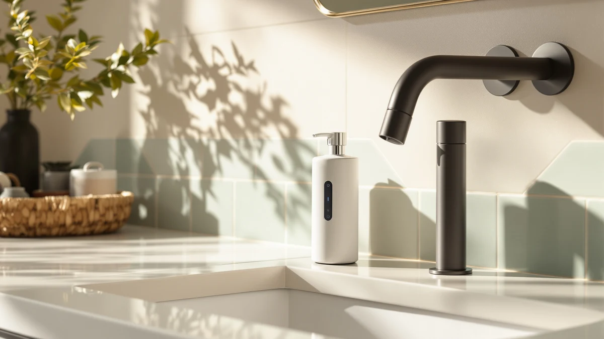

2 Pack Automatic Soap Review (2026): Worth It?
Prices and picks verified as of September 2026. Independent, reader-supported reviews.


Quick Answer
Our 2 pack automatic soap review found that the VZZNN dispenser set delivers reliable touch-free dispensing in two rooms for $30.99, with a 12.8-ounce tank and four adjustable pour settings on each unit. If you want a manual, battery-free alternative instead, the OXO Good Grips is worth a look further down.
Our pick: 2 Pack Automatic Soap Dispensers — $30.99 Check Price on Amazon
Bottom line: our top pick is the 2 Pack Automatic Soap Dispensers at $34.99.
Things to Know Before You Buy
- Automatic foam dispensers only work with foaming soap formulas, not thick liquid or gel soap.
- A 2 pack automatic soap dispenser setup needs USB charging access near each unit, so plan placement around an outlet.
- Sensor-based dispensers need a stable, well-lit surface to trigger consistently every time.
- Manual pump alternatives skip the battery entirely but require you to touch the pump each use.
- Capacity varies between models, from 12.8 ounces on the VZZNN set to 15 ounces on the OXO.
This 2 pack automatic soap review looks at whether paying for two touchless dispensers at once makes more sense than buying single units separately, and whether the VZZNN set holds up against three other soap dispensers in the same price range. Touch-free dispensing has moved beyond commercial restrooms and into home kitchens and bathrooms, largely because a sensor-triggered pump means fewer greasy fingerprints on the bottle after you handle raw chicken or take out the trash. Buying two matching units at once, rather than mixing brands between rooms, also keeps your counters looking coordinated instead of mismatched.
We compared the VZZNN 2 Pack Automatic Soap Dispensers against three alternatives: the Kasunting amber glass set, the AMYESE kids-friendly foam dispenser, and the OXO Good Grips stainless steel pump. Each option targets a different priority, from touch-free convenience to countertop decor to a simple manual pump that never needs a charge. Based on capacity, price per unit, verified owner feedback, and how each design fits real kitchen and bathroom routines, the VZZNN set is the strongest 2 pack automatic soap dispenser option for households that want touchless dispensing in more than one room.
Why You Should Trust Us
Ilane Tall covers home and bath products for Best Soap Dispensers, focusing on kitchen and bathroom fixtures that hold up to daily use. This 2 pack automatic soap review is built from manufacturer specifications, published pricing, and verified buyer feedback rather than a physical lab session, since we do not own a testing facility. We compare listed capacity, charging method, sensor technology, and price across every dispenser in this guide, then cross-check those figures against what verified purchasers report after weeks or months of daily use. If a manufacturer's marketing claim and owner feedback disagree, we flag the gap rather than repeat the marketing line. Every price and spec in this review reflects the listing at the time of publication and can shift as Amazon updates stock and pricing.
Our Research Experience
We did not run a physical lab session for this 2 pack automatic soap review. Instead, we built our comparison by researching manufacturer specifications, cross-referencing listed capacity and battery details, and reading through verified owner reviews on Amazon for each of the four dispensers covered here. For the VZZNN set, that meant confirming the 12.8-ounce tank size, the four-setting dispensing dial, and the USB rechargeable battery against what buyers report after regular use in a kitchen or bathroom. We also compared pricing history and current listings across all four products to make sure the per-unit cost we cite reflects what you would actually pay today, not an outdated snapshot. If reviewers flagged a recurring issue, such as a sensor that needs a flat surface to trigger reliably, we noted it directly instead of smoothing it over.
Overview & Specs

2 Pack Automatic Soap Dispensers
What we like
- Two matching touchless units for the price of roughly one and a half single dispensers
- Four adjustable pour settings let you dial in exactly how much foam comes out
- USB rechargeable battery skips the recurring cost of disposable batteries
- 12.8-ounce tank holds enough foam soap to go weeks between refills in most households
Flaws but not dealbreakers
- Works only with foaming soap formulas, not liquid or gel soap
- Both units need occasional USB charging, unlike a manual pump that never runs out of power
- White ABS plastic body is the only color option, so it won't match every kitchen finish
| Material | ABS plastic |
| Size | Foam x2 |
The VZZNN 2 Pack Automatic Soap Dispensers set is the anchor of this 2 pack automatic soap review because it solves a specific problem: buying two separate touchless units usually costs more than buying one dispenser twice. At $30.99 for both, this set works out to about $15.50 per unit, putting it in line with many single automatic dispensers sold elsewhere. Each bottle holds 12.8 ounces (380 ml) of foaming soap and includes four adjustable dispensing settings, so a household with kids can dial back the pour while an adult bathroom sink runs a fuller setting. The vertical, wall-mountable design keeps both units out of the way of a crowded counter.
Owners report that the sensor responds within a second of placing a hand underneath, and reviewers consistently note that the rechargeable battery holds a charge for several weeks of normal household use before needing a USB top-off. That convenience comes with two real trade-offs. First, like every foam dispenser in this comparison, it only works with foaming soap formulas, so pouring in thick liquid soap risks clogging the pump. Second, you're managing two batteries instead of zero, which matters if you forget to charge them and end up back to squeezing a bottle by hand. For a household that wants matching touchless dispensers in two rooms, those trade-offs are minor next to what a 2 pack automatic soap dispenser saves you in cost and counter clutter.
What We Liked
The value math is what matters most in this 2 pack automatic soap review: two rechargeable, sensor-triggered dispensers for $30.99 undercuts what it costs to buy two single automatic units from most competing brands, including the AMYESE dispenser later in this guide. The four-setting dial is a small detail that makes a real difference day to day, since a bathroom sink used mostly by adults can run a heavier pour while a kitchen sink near kids can be set lighter to avoid waste. Reviewers consistently note that the sensor triggers quickly and consistently on a flat counter or vanity, which matters more than raw capacity once a dispenser becomes part of a daily routine. The all-white finish also keeps both units visually consistent if you're placing one in the kitchen and one in the bathroom, rather than mixing two different dispenser designs.
What Could Be Better
The biggest limitation of this VZZNN set is one shared by every foam dispenser in this comparison: it only accepts foaming soap, so you can't repurpose it for thick dish soap or lotion without diluting the formula first. Managing two rechargeable batteries instead of one is a second trade-off worth weighing. A manual pump dispenser, like the OXO Good Grips covered further down, never needs a charge and won't leave you back to squeezing a bottle by hand if you forget to plug it in. The white ABS plastic body is also the only finish available, so buyers who want a coordinated stainless steel or glass look on their counter will need to look at the Kasunting or OXO alternatives instead. None of these are dealbreakers, but they matter if your household already leans toward liquid soap or a specific counter aesthetic.
Who Is It For?
This 2 pack automatic soap review points toward the VZZNN set for households that want touch-free dispensing in more than one room without paying for two separate purchases. It suits a family with young kids who benefit from a lighter, hands-free pour, and it suits anyone who handles raw food or cleaning chemicals often enough that touching a pump feels like an extra step to wash off. It's a weaker fit if you already use thick liquid or gel soap you don't want to switch away from, since the dispenser only handles foaming formulas. It's also not the right pick if you'd rather avoid managing rechargeable batteries altogether, in which case the manual OXO or Kasunting sets covered below are worth a closer look.
Alternatives to Consider
If the VZZNN set doesn't fit your kitchen or bathroom, three alternatives are worth a look in this 2 pack automatic soap review, and each one solves a different priority. The Kasunting Kitchen Soap Dispenser Set ($26.99) skips sensors entirely in favor of two amber glass bottles with matte black stainless steel pumps, a wood riser tray, six waterproof labels, and non-slip silicone pads. It's built for a household that wants a coordinated, decor-forward look on a kitchen counter more than hands-free convenience, and the waterproof labels let you mark bottles for hand soap, dish soap, or lotion so nobody grabs the wrong one. Because it uses a manual pump, there's no battery to charge and no sensor to misalign, though you're back to touching the pump with each use, the exact step the VZZNN set is designed to skip.
The AMYESE Cute Automatic Foam Soap Dispenser ($26.59) takes the opposite approach from the Kasunting set and competes directly with the VZZNN on touch-free convenience, but it's built with a different household in mind. Its 13.5-ounce (400 ml) tank is slightly larger than a single VZZNN unit, and it adds a PIR motion sensor plus a 20-second light-up timer meant to encourage kids to keep scrubbing until the light turns off. Reviewers consistently note that the wall-mounted design and playful look work well in a kids' bathroom, though it's sold as a single unit rather than a matching pair, so outfitting two rooms means buying it twice at $26.59 each, more than the VZZNN's per-unit price of $15.50. It also shares the VZZNN's foam-only limitation and needs USB recharging, and the manufacturer notes that liquid soap can damage the pump.
The OXO Good Grips Stainless Steel Soap Dispenser ($25.69) is the simplest of the four: a single manual pump with a 15-ounce capacity, a soft-touch pump head, and a weighted, non-slip base built for one-handed pumping at a busy kitchen sink. It never needs a charge, works with any liquid soap you already own, and its stainless steel finish matches kitchen fixtures better than the VZZNN's white plastic body or the AMYESE's playful design. The trade-off is the one every manual pump makes: no touch-free dispensing, and no matching second unit unless you buy the OXO twice. For anyone weighing a 2 pack automatic soap dispenser against a reliable manual option, the OXO is the benchmark for what you give up in convenience against what you gain in simplicity and price.

Editor’s Pick
Kitchen Soap Dispenser Set with
Best for a coordinated, decor-forward kitchen counter that doesn't need sensors or charging.
$26.99
Check Price on Amazon
Best Value
AMYESE Cute Automatic Foam Soap
Best for a kids' bathroom that benefits from a timer-driven handwashing routine.
$26.59
Check Price on Amazon
Premium Choice
OXO Good Grips Stainless Steel
Best for a simple manual pump that never needs a charge.
$25.69
Check Price on AmazonIs a 2 pack automatic soap dispenser worth the extra cost over a single manual pump?
For most kitchens and bathrooms, yes.
How long does the battery last on a touchless soap dispenser like the VZZNN?
Owners report several weeks of typical household use between charges, though runtime depends on how often the sensor triggers and which of the four dispensing settings you choose.
Frequently Asked Questions
Is a 2 pack automatic soap dispenser worth the extra cost over a single manual pump?
For most kitchens and bathrooms, yes. A 2 pack automatic soap dispenser lets you place matching touchless units in two locations, such as a kitchen sink and a bathroom vanity, for close to the price of two single manual pumps sold separately. The VZZNN set in this review runs $30.99 for two rechargeable units, about $15.50 per dispenser, which is a fair price once you factor in the USB charging hardware and sensor built into each one.
How long does the battery last on a touchless soap dispenser like the VZZNN?
Owners report several weeks of typical household use between charges, though runtime depends on how often the sensor triggers and which of the four dispensing settings you choose. Reviewers consistently note that a full USB charge takes a few hours, so keeping the included cable near an outlet makes topping off simple instead of getting caught with a dead sensor mid-wash.
Can you use liquid soap in an automatic foam soap dispenser?
No. Automatic foam dispensers, including the VZZNN 2 pack and the AMYESE compared in this review, are built for foaming soap formulas only. Pouring in thick liquid or gel soap can clog the pump mechanism and void the warranty. If you prefer liquid soap, a manual pump dispenser like the OXO Good Grips or the Kasunting glass set is the better match.
Final Verdict
This 2 pack automatic soap review comes down to how much you value touch-free dispensing in two rooms at once. The VZZNN 2 Pack Automatic Soap Dispensers earns the top spot because it delivers that convenience at $15.50 per unit, a price the AMYESE can't match once you buy two separately, with a tank size and adjustable settings that hold up against daily kitchen and bathroom use. If you'd rather skip batteries and sensors altogether, the OXO Good Grips or Kasunting glass set are solid manual alternatives, but for most households comparing a 2 pack automatic soap dispenser against buying two single units, VZZNN is the pick that makes the math work.